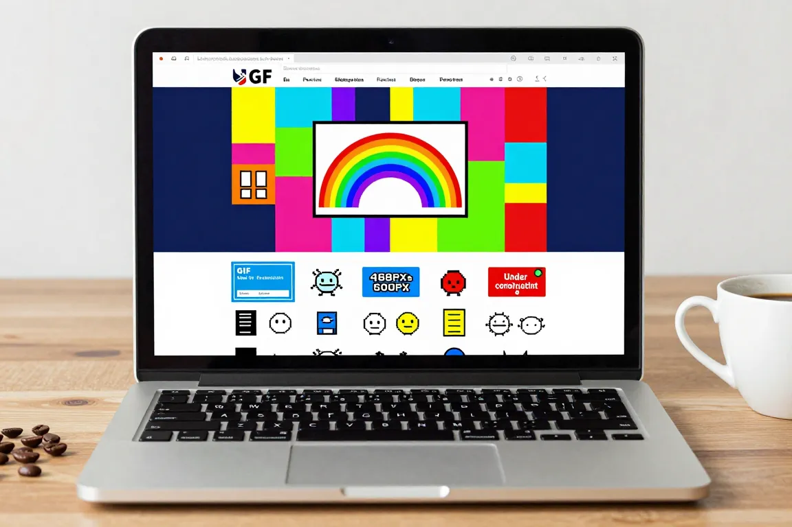

internet · 1995–2009 · also: Personal home page, Under-construction web, 90s homepage
A personal page with a tiled star or marble background, rainbow rules, animated GIFs, a visitor counter, a guestbook and an under-construction sign. Free web hosts such as GeoCities made it common.

Core thesis
Every person owns a page, and the page shows what its owner loves, with no care for taste.
Design principles
Tile a small background image (32px to 128px) of stars, marble or clouds over the full page.
Set body text in a bright colour on a dark ground, for example yellow (#FFFF00) on navy (#000080).
Separate sections with a rainbow rule or a GIF line 4px to 8px high.
Place 3 to 6 animated GIFs on the page: a spinning mail box, a flame, a waving flag, a 'NEW!' tag.
Add a visitor counter of 6 digits, a guestbook link and a sign 'Under construction' at the top.
Centre the content in one column of 600px to 640px and set links in a bright colour on a dark ground.
Put a marquee line at the top that scrolls text at about 60px per second.